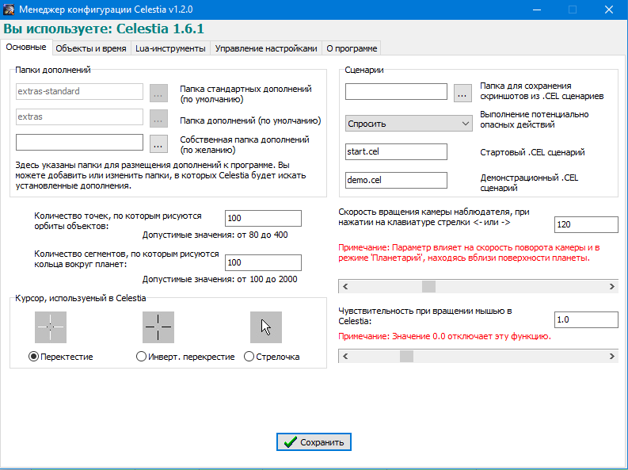
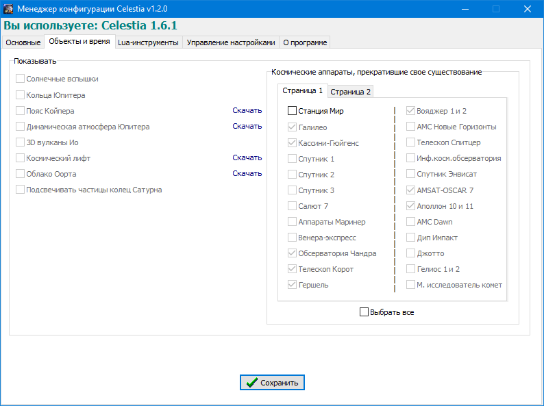
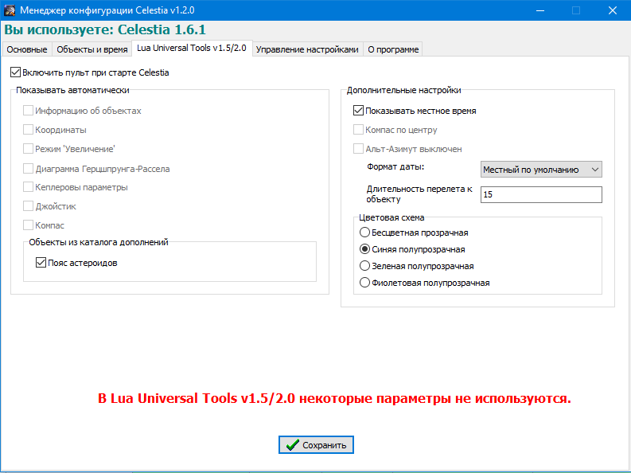

Основные

Здесь можно редактировать все настройки файла celestia.cfg. Пользователю не нужно открывать файл вручную, изучать синтаксис и читать описание всех параметров. Вы можете легко изменять папки допллнений, настраивать сценарии, отображать параметры орбиты, скорость вращения камеры и многое другое.
Объекты и время

Эта вкладка позволяет включать и выключать некоторые дополнения, которые могут быть не всегда нужны или могут загружать систему. Это избавит вас от необходимости удаления и повторной загрузки этих дополнений. Также вы можете включить или отключить отображение в реальном времени космических аппаратов, которые перестали существовать (например, станция «Мир» или «Галилео»).
Lua-инструменты

На этой вкладке вы можете управлять настройками Lua-инструментов, таких как Lua Edu Tools и Lua Universal Tools. Пользователю не нужно открывать файл config.lua вручную, изучать синтаксис и читать описание всех параметров. Вы можете выбрать, какие панели инструментов будут отображаться по умолчанию, включать/отключать встроенные дополнения и менять дополнительные настройки.
Celestia Config Manager может экспортировать и импортировать настройки, а также восстанавливать настройки по умолчанию.